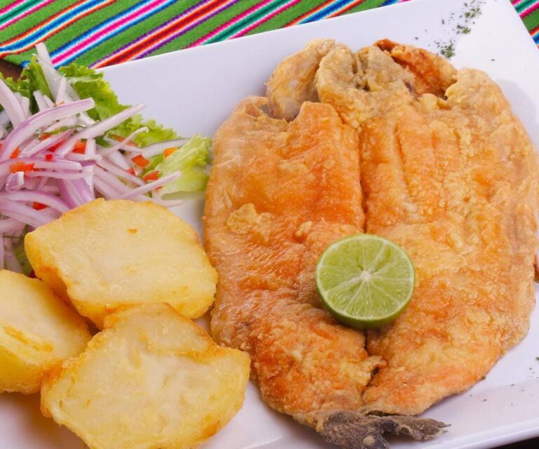

En "Llama te informa" realizamos la clasificación de las 7 mejores platos típicos de la sierra del Peru. Esta parte del territorio Peruano conocido como sierra, tiene sus propias características, la mayoría de sus platos están basados en cuy, papa, maíz y animales de la region.
Gracias a las características geográficas del altiplano peruano, la gastronomía andina se caracteriza por traer a la mesa una variedad de alimentos nutritivos como papas, batatas, frijoles, maíz, entre otros. También utiliza diferentes tipos de carne que complementan el exquisito condimento de los platos típicos andinos.
Las regiones más representativos de la gastronomía de la sierra son: Cusco, Puno, Arequipa y Cajamarca.
Estos son los platos típicos de la sierra Peruana más conocidos:
Papa a la huancaína
Este es el plato más popular de la gastronomía peruana en el mundo, este emblemático aperitivo peruano consiste en paps cortadas en rebanadas gruesas, que luego se juntan en una salsa aterciopelada.
Esta receta tradicional ofrece un equilibrio de sabores almidonados con queso, picante y salado. Aunque la receta original contenía pimentón rocoto, fue reemplazada por pimienta amarilla.
una comida tradicional de Huancayo. Consiste en papas hervidas en una salsa amarilla cremosa llamada Huancaína.
Esta salsa está hecha de pimientos rojos dulces y pimientos anaranjados picantes, queso, leche y el famoso pimentón amarillo picante de Perú. Se suele decorar con lechuga, aceitunas, maíz y huevo cocido.
La salsa Huancaína puede ser servida como un excelente acompañamiento para muchos otros platos, como pasta, yuca frita, maíz, huevos de codorniz, causa limeña, o chifle (plátanos fritos).
Aunque la versión original se hace con papas amarillas, también se puede hacer con papas blancas.
Rocoto Relleno

Es un plato de rocoto (una especie de ají parecido al tomate), estos son rellenados con varías cosas. Otros lo comparan el rocoto con chile picante y jalapeño.
Aunque se puede encontrar en todo el país, esta comida se asocia típicamente con Arequipa, una de las ciudades más grande del Perú.
Este plato consiste en un rocoto relleno de carne molida de res o cerdo marinado con diferentes especias, cebollas picadas y un huevo duro hervido.
Cuando se rellena, el queso blanco se coloca encima para que se derrita cuando se hornea.
Las humitas y Tamales
Los Humitas y los tamales son un tipo de pastel, pero siendo conocedores de esta plato, no podemos considerar un pastel, es algo que tienes que probarlo y clasificarlo por ti mismo.
Las humitas son saladas y los tamales son dulces, aunque esta clasificación solo aplica en la sierra, ya que en la costa los tamales son otros.
Lo que tiene en común estos 2 comidas es en la forma de preparación, ya que la masa de la preparación se envuelve en hojas de maíz y se cocina al vapor.
Chicharrón
Es un plato que tiene sus variaciones en cada región, así tenemos el chicharoon Cusqueño, Arquipeño, Puneño, Cajamarquino, etc.
El cerdo se corta en trozos y se dora en su propia grasa. Se sirve en el desayuno. Preparar el cerdo o la carne de cerdo en trozos con el hueso en una olla.
Al hervir, la carne arroja su grasa, consume el líquido y se dora gradualmente. Se corta, se sala y se sirve con maíz, papa o yuca.
Calco de Cordero
Este caldo es uno de los favoritos en la sierra peruana, para preparar este caldo primero hay que lavar y pelar la cabeza del cordero correctamente, luego cortar y retirar en trozos la carne que éste contiene.
Luego en una olla grande agregar todos los ingredientes necesarios para la preparación de la sopa y luego dejarla cocer durante una hora y media, luego se puede servir acompañada de una porción de cancha y limón al gusto.
También se puede acompañar con un poco de perejil picado que le da un sabor exquisito.
Trucha Frita

Es otro de los platos típicos de la sierra del Perú. La trucha es un pescado con un alto contenido de minerales y vitaminas y es considerado como un alimento muy nutritivo.
Después de freír el pescado, se sirve acompañado de papas doradas o sancochadas, arroz o camote, y su nutritiva ensalada.
Olluquitos con Charqui
El charqui o charque es la típica carne de llama, alpaca y guanaco deshidratada al sol en la región andina, y también con los de reses y ovejas traídas por los españoles.
En la sierra es común comer el charqui como ingrediente principal de guisos y sopas o como relleno de tamales y empanadas.
El olluco es una planta de la que se consumen sus tubérculos y hojas. Los peruanos los preparan con charqui, principalmente de carne de oveja, en una deliciosa receta que es típica de las serranías.